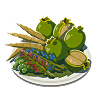
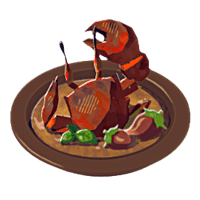
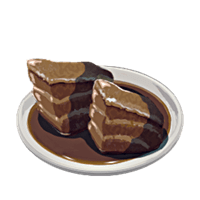
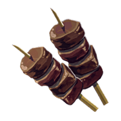
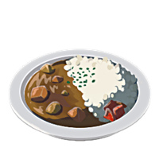
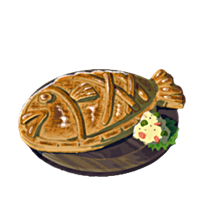
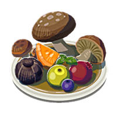
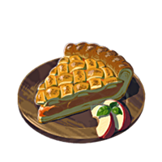

| Изображение | Название | Описание | Ингридиенты | Эффект |
|---|---|---|---|---|
Жаренные бананы |
Дети любят жареные бананы. Хитрость заключается в том, чтобы жарить их на очень сильном огне. |
Пшеница, тростниковый сахар, бананы |
Полностью восстановливает здоровье,дает повышение силы атаки на ограниченное время |
|
|  | Зеленый салат |
Полезное блюдо из смеси зелени, приготовленной |
Любые 4 овоща, цветка или пучка трав |
Полностью восстановливает здоровье,дает повышение скорости передвижения на ограниченное время |
|  | Крабовое жаркое |
Специя «Горон», использованная при приготовлении этого краба, идеально сочетается со вкусом его мяса. |
Специя «Горон», краб |
Полностью восстановливает здоровье |
|  | Мясо в меду |
Сладость меда пронизывает мясо, придавая ему сложный вкусовой профиль. |
Любое мясо, мед |
Полностью восстановливает здоровье, дает защиту от возгорания |
|  | Питательные мясные шашлычки |
Просто насадите кусок мяса |
4 разных вида мяса |
Восстановливает 13 сердец |
|  | Рис карри |
Это простое блюдо, любимое во всем Хайруле, имеет вкус, от которого вы точно не устанете. |
Специя «Горон», хайрульский рис |
Восстановливает 2 сердца |
|  | Рыбный пирог |
В этом блюде сладость фруктов контрастирует с пикантностью грибов |
Рыба, пшеница, соль, козье масло |
Полностью восстановливает здоровье |
|  | Фруктово-грибной микс |
Такой хрустящей корочкой может гордиться любой рыбак. |
Любой фрукт, любой гриб |
Полностью восстановливает здоровье, повышает запас выносливости |
|  | Яблочный пирог |
Хрустящая, слоеная корочка |
Пшеница, тростниковый сахар, козье масло, яблоко |
Восстанавливает здоровье |